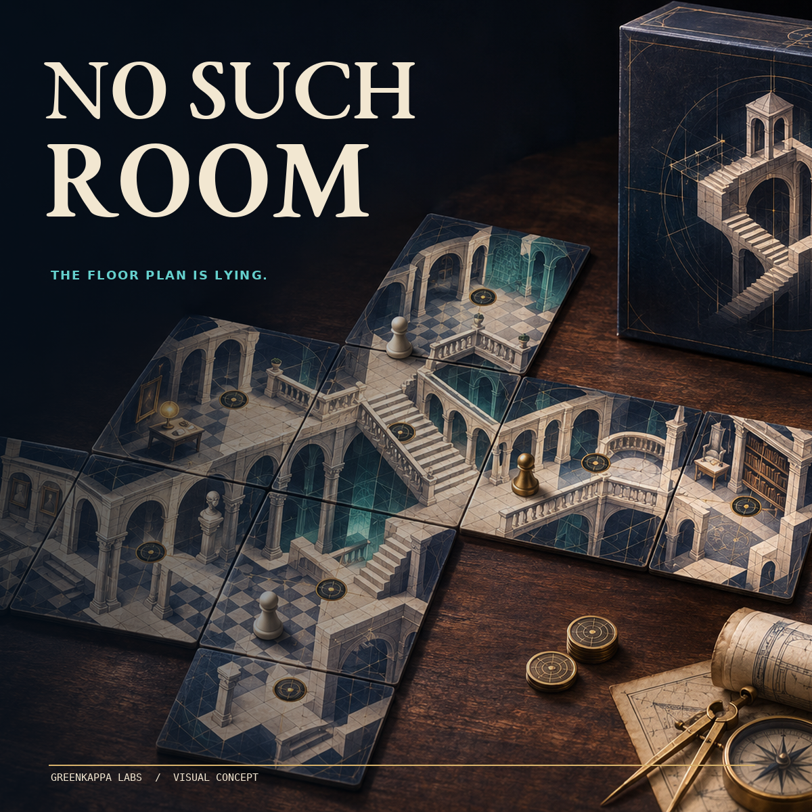
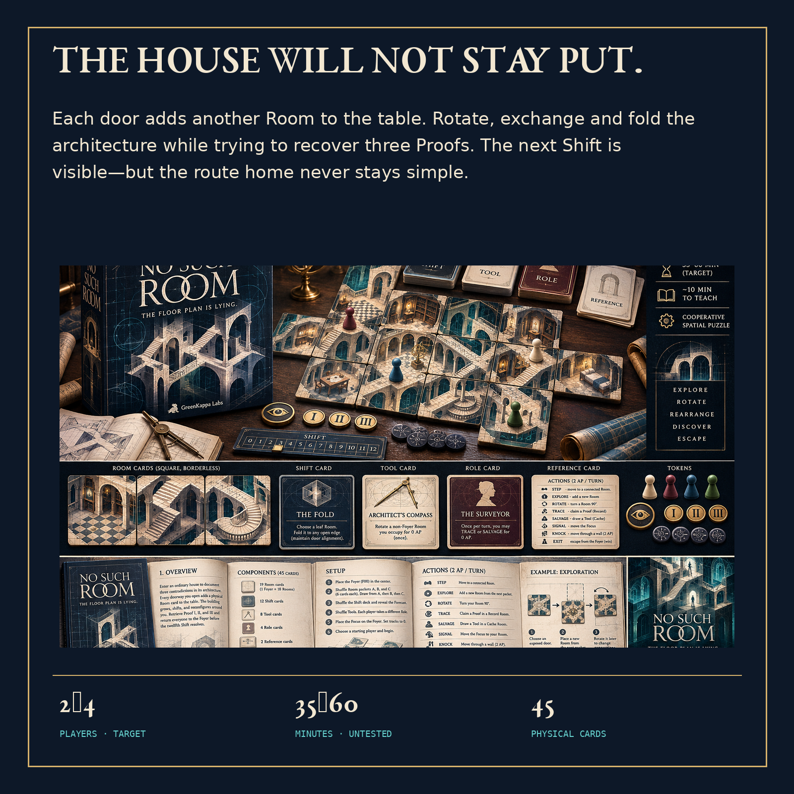

Grow the house.
Explore through an exposed doorway. Draw from three staged packets and attach a new Room to the structure you are making together.
GreenKappa Games / Original cooperative board game
The floor plan is lying.
The cards aren't a map of the house. They are the house.
Explore an impossible mansion built from square Room cards. Place its rooms, rewire its passages, and use the next forecasted Shift to your advantage. Find three Proofs, reunite at the Foyer, and escape before the building rearranges itself one last time.

01 / What kind of game?
A physical spatial strategy game, driven by cards rather than a printed map. Every newly explored square becomes part of the playing surface; every door alignment and stair connection determines where your pawn can go.
Explore through an exposed doorway. Draw from three staged packets and attach a new Room to the structure you are making together.
See the next rearrangement before it happens. Move the Focus, choose a route, or reposition your team while the plan is still legible.
Rooms rotate, swap positions, and Fold to new wings. A physical adjacency may remain while a traversable passage disappears.
Claim Proof I, II, and III and return every pawn to the Foyer. Spend an action to EXIT before the twelfth Shift finishes.
02 / The mechanics
Each turn gives you two Action Points. Spend them moving, exploring, turning rooms, gathering evidence, salvaging tools, or breaking through a wall when the path closes.

Two touching Rooms connect only if their edge doorways align. An unconnected shared wall can be crossed using KNOCK, but it costs two AP and creates an Echo.
The candidate alpha includes distinct internal passage lanes. Five stair transitions connect passages; two over-under crossings look connected but are not.
A visible Shift resolves every third player turn. Use SIGNAL, Roles, and Tools to influence which part of the house changes next.
The free nine-room browser microgame lets you experience changing room positions. It is deliberately simplified: it does not implement the physical game's door alignment, stair passages, Fold, Echo, or Tool rules.
03 / Ghost Blueprint
Midnight-navy drafting surfaces, ivory stone, luminous teal routes and restrained brass survey marks give the physical game, printed materials, and packaging a single visual language.



Promotional images illustrate the intended product and visual identity. They are not photographs of manufactured components or proof of physical print quality; gameplay rules and accessibility take precedence over concept art.
04 / Development record
The working physical game has a full 45-card prototype and printable teaching materials. Its current rules candidate adds navigable internal passages, functioning stair transitions, and over-under crossings to the rotating modular house.
Automated structural tests check valid layouts and routing, but the intended 35–60-minute duration, difficulty curve, and enjoyment have not been established through observed human playtesting.